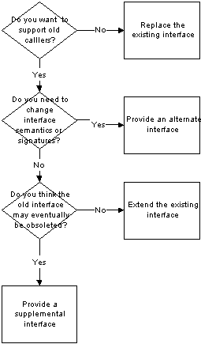

Revising Interfaces
by Alec Flett <alecf@flett.org >Comments and questions to netscape.public.mozilla.embedding
Status: incomplete, still need to update examples.
This document explains the different ways to update a frozen interface. It describes the scenarios where each method may be appropriate.

These are the methods that will be described here:
- Extending an existing interface
- Replacing an existing interface
- Providing an alternate interface
- Providing a supplemental interface
nsIGlobalHistory will be extended by adding the capability of hiding a page in history, and setting the title of a page that has been added to history. The following methods will be used in most of the examples:
void hidePage(in string url);
void setPageTitle(in string url, in wstring title);
nsIWebProgressListener will be extended by adding one method:
????Extending an existing interface
The simplest way to extend a frozen interface is to create a new interface which inherits from the old interface. The new implementation implements the new interface, which encapsulates the old one. The old and new interfaces have distince IIDs, so callers are able to QueryInterface to either the original interface, or to the new extended one which will have all the methods of the original.
interface nsIGlobalHistory2 : nsIGlobalHistory {
void hidePage(in string url);
void setPageTitle(in string url, in wstring title);
};
interface nsIWebProgressListener2 : nsIWebProgressListener {
};
Pros: Transparent support for old callers. New callers can easily use the new interface.
Cons: Does not allow semantics or signature of old interface to change. If old interface is obsoleted, this one must be as well.
Providing a supplemental interface
This technique involves creating a completely seperate interface with little or no reference to the original interface. Callers must QueryInterface to this new interface.
interface nsIGlobalHistory2 : nsISupports {
void hidePage(in string url);
void setPageTitle(in string url, in wstring title);
};
Pros: New interface does not depend on old interface, so old interface can later be obsoleted.
Cons: New interface does not inherently share the capabilities of the old interface - callers must QueryInterface betwen old and new interface.
Replacing an existing interface
This method simply declares the old interface obsolete. Future callers to QueryInterface which are looking for the old interface will fail.This interface is most often used when method signatures need to change. In the nsIGlobalHistory example, we will change the addPage() method to take the hidden state of the url and the page title.
interface nsIGlobalHistory2 : nsISupports {
void addPage(in string url, in boolean hidden, in wstring
title);
boolean isPageVisited(in string url);
};This method completely replaces the old interface and assumes a new interface ID. Callers who previously called into this interface will probably fail because the old interface and IID are no longer valid.
Pros: No need to support the old interface, no baggage. Allows complete replacement/removal of any methods in the old interface.
Cons: No support for old callers.
Providing an alternate interface
This technique involves creating and implementing a completely new interface but still retaining support for the old interface. Using this technique you will be able to support both old and new callers.
In our example, we will redefine the addPage() method, but leave isPageVisited alone.
interface nsIGlobalHistory2 : nsISupports {
void addPage(in string url, in boolean hidden);
void isPageVisited(in string url);
void setPageTitle(in string url, in wstring title);
}
Note that the old methods, addPage() and isPageVisited() are still around and that their signatures match the old interface. This technique is difficult to implement because of the fact that they match. In order to correctly implement this, you must create an "inner" object which is contained by your old object, which implements the old interface. When a caller QueryInterface's into the old interface, you must hand them back an pointer to this old interface. This is called encapsulation??? in COM.
Pros: support for both old and new interfaces, able to change function signatures.
Cons: difficult to implement, requires "inner' object if any identical methods exist in both objects.